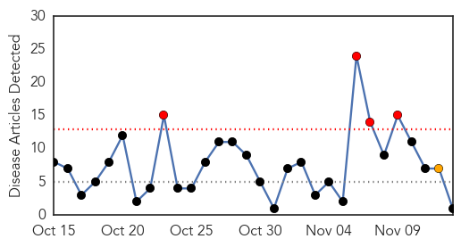
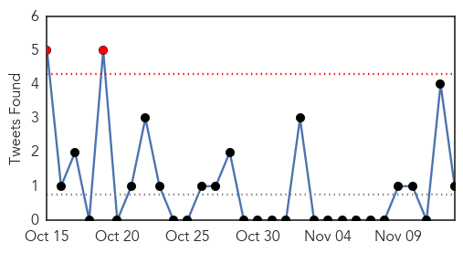
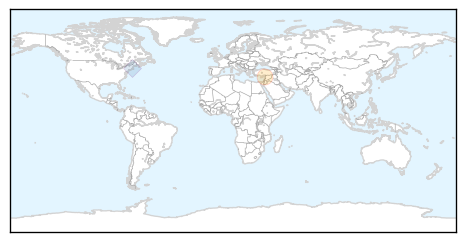
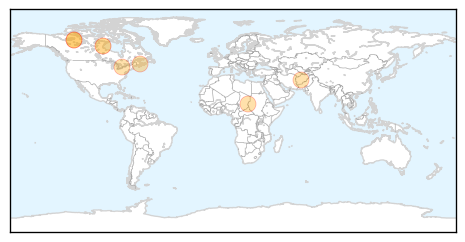
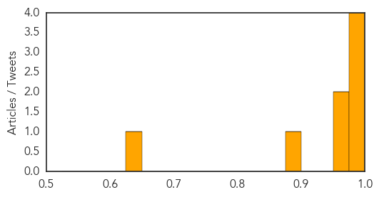

Cholera
30-Day Web Trend
4 alerts, 1 warnings

30-Day Twitter Trend
5 alerts, 0 warnings

Article Locations
Article Confidences
Top Articles:
Top Tweets:
- 0.728
- RT: HAITI / CHOLERA: https://t.co/rK865BYmiJ
- 0.642
- RT: “@HaitiJustice: .@UN Cholera in Haiti keeps killing: 15 communes on Red Alert https://t.co/lOYz5YlJf5”
- 0.551
- RT: @HaitiJustice dozens of cases of Cholera are in Anse-a-Pitres in the camps and there has already been a death of a baby b…
Pertussis
30-Day Web Trend
1 alerts, 0 warnings

30-Day Twitter Trend
0 alerts, 0 warnings

Article Locations
Article Confidences
Top Articles:
- 0.994
- Malaria spreading in the west of Darfur, while whooping cough in the north of Darfur
- 0.978
- Canada seeing outbreaks of pertussis. Is waning immunity from shots one reason?
- 0.975
- News Talk Sports :: Canada seeing outbreaks of pertussis. Is waning immunity from shots one reason? :: National News
- 0.975
- Canada seeing outbreaks of pertussis. Is waning immunity from shots one reason?
- 0.970
- Canada seeing outbreaks of pertussis. Is waning immunity from shots one reason?
- 0.969
- Whooping cough is back
- 0.876
- Areas across Canada seeing outbreaks of whooping cough
- 0.627
- Whooping cough on the rise
Top Tweets:
-
No tweets found for Nov 13, 2015